Unit 06 · Training, adaptation, and data pipelines
Lesson 06: Training, adaptation, and data pipelines
Unit: cs229s-U06. Concepts: cs229s-U06-C01 to C12. Date: 2026-10-06. Baseline: October 6, 2026. Claim class for every leaf: PLANNED / SOURCE ATTRIBUTION PENDING. Family anchor: CALENDAR-ANCHORED, Week 4, Oct 18, “Adapting Large Language Models” (presented by Azalia): “An Overview of LLM Training, Finetuning, and Inference”, Scaling Laws, Zero-shot, Few-shot, Emergent Abilities, Instruction Following Models, RLHF-RLAIF-Constitutional AI, Parameter Efficient Finetuning. Also Oct 21 (same block), Oct 25 (“Data in AI Pipelines”), and Oct 23 guest talk by Tim Dettmers on efficient training and inference.
How to read this lesson
Same 15-item contract as U01, in compact form. Shared
symbols follow notation_and_shapes.md. Scaling-law and
pipeline numbers are lesson toys computed here, not vendor
claims. Shared bridges: P10 (ML foundations and evaluation),
P11 (neural networks and autodiff), P14 (transformer
mechanics), P17 (reinforcement learning), at
v2-pack/shared/prerequisites/.
C01: scaling laws
Source, scope, objectives, dependencies
Calendar anchor: Week 4, Oct 18, “Scaling Laws”. Scope: loss as a power law of parameters, data, and compute. Objective: fit a log-log line and predict a held-out scale. Depends on P10, P11.
Motivating question and tiny toy
Question: if loss falls predictably with scale, can a small run predict a big run? Toy: two training runs, N1 = 1e9 params with loss 2.40, N2 = 1e10 params with loss 2.02. Fit and predict N3 = 1e11.
Mental model
Loss is a straight line on log-log paper. Each tenfold increase in parameters shaves a fixed amount off the log loss. The line has a floor: no scale reaches zero.
Objects, shapes, assumptions
- L(N): test loss at parameter count N.
- Toy form: log10 L = a - b * log10 N (no floor in the toy. The real form adds a floor term).
- Assumption: same architecture, same data mix, same optimizer recipe. Change any of these and the line moves.
Derivation
Two points fix the line. Slope b = (log10 L2 - log10 L1) / (log10 N2 - log10 N1). Intercept a = log10 L1 + b * log10 N1. Predict at N3 by evaluation of the line. The derivation is linear regression in log space with two points.
Computed example
log10(2.40) = 0.3802. Log10(2.02) = 0.3054. b = (0.3054 - 0.3802) / (10 - 9) = -0.0748 per decade. a = 0.3802 + 0.0748 * 9 = 1.0534. Predict at N3 = 1e11: log10 L3 = 1.0534 - 0.0748 * 11 = 0.2306. L3 = 10^0.2306 = 1.70. Compute budget toy: C = 6 * N * D. N = 1e9, D = 2e10 tokens: C = 1.2e20 FLOPs. The 6 counts forward (2N) plus backward (4N) per token.
Implementation and checks
import math
def fit_law(n1, l1, n2, l2):
b = (math.log10(l2) - math.log10(l1)) / (
math.log10(n2) - math.log10(n1))
a = math.log10(l1) - b * math.log10(n1)
return a, b
def predict(a, b, n):
return 10 ** (a + b * math.log10(n))
a, b = fit_law(1e9, 2.40, 1e10, 2.02)
assert abs(b - (-0.0748)) < 0.001
assert abs(predict(a, b, 1e11) - 1.70) < 0.02
Check: predict at N2 recovers 2.02 (the fit passes through its own points). Lab-06 asserts this.
Complexity and costs
Fitting is trivial. The cost is the runs that make the points: each point is a full training run.
Nearest alternative and selection boundary
Nearest alternative: fit with a floor, L = L_inf + A N^-b. Selection boundary: the floor form wins when points bend flat at large N. The two-point line wins when you own exactly two runs.
Failure case and counterexample
Broken assumption: “the recipe is fixed.” Change the data mix and the intercept shifts: the old line predicts a loss the new run never reaches. Counterexample: keep N fixed, double the data quality. Loss drops, the parameter-only law says it cannot.
Research reading and falsifiable extension
Reading: the Oct 18 scaling-laws session. Falsifiable extension: train three toy models at N, 2N, 4N on fixed data, fit the line on the first two, predict the third. Hypothesis: prediction lands within 5% of measured. Report all three numbers.
Exercises
- E01 (recall): write the two-point fit formulas.
- E02 (numerical): N1=1e9 L1=2.40, N2=1e10 L2=2.02. Fit and predict N=1e11.
- E03 (failure diagnosis): the big run beats the prediction by 0.2 loss. Name two causes.
- E04 (counterfactual): data doubles while N stays fixed. What does the N-only law predict, and why is it wrong?
- E05 (research): state the three-run falsification protocol.
Visual units
- Figure
u06_c01_law.png: log-log line through two points, prediction at the third. Source: original toy. Shell 6 (predict, then measure).
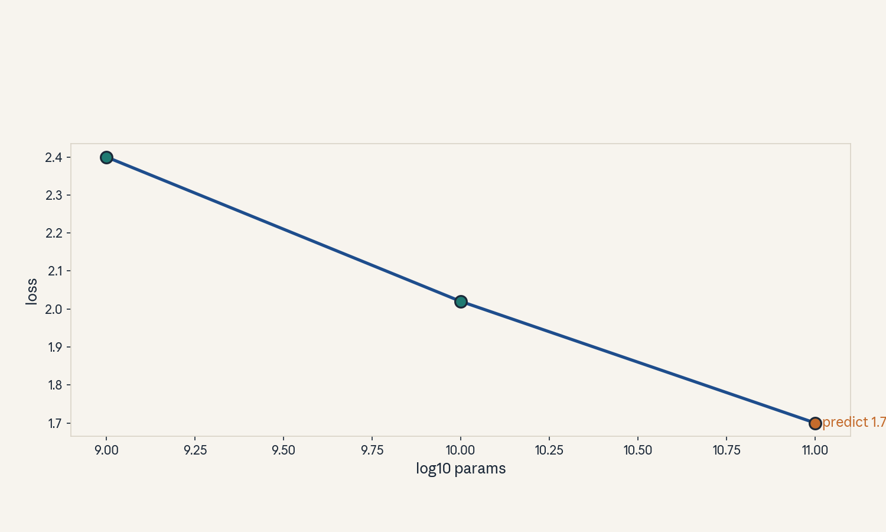
- Audit:
u06c01tof01. Before: two points. After: the line. One rule: extrapolate in log space.
C02: zero/few-shot
Source, scope, objectives, dependencies
Calendar anchor: Week 4, Oct 18, “Zero-shot, Few-shot, Emergent Abilities”. Scope: prompting without weight updates. Objective: measure the k-shot curve on a toy task. Depends on P10, P13, P14.
Motivating question and tiny toy
Question: why do examples in the prompt help if no weights change? Toy: a 4-option question task. K = 0, 1, 5, 10 examples in the prompt. Accuracies: 0.52, 0.61, 0.68, 0.71.
Mental model
The prompt is a temporary program. Examples set the format and the decision rule in context. The weights stay frozen. The activations carry the task.
Objects, shapes, assumptions
- k: number of in-context examples.
- A(k): accuracy at k examples.
- Assumption: the examples fit in the context window and the model can copy the format.
Derivation
No gradient flows. The mechanism conditions rather than trains: P(y | prompt with k examples) concentrates on the demonstrated pattern as k grows, because each example is evidence for the format and label mapping. The curve saturates when the pattern is fully specified.
Computed example
Toy: k=0: 0.52 (above the 0.25 chance rate, the pretrained prior already knows the task shape). k=1: 0.61 (+0.09: the format locks in). K=5: 0.68 (+0.07: label mapping sharpens). K=10: 0.71 (+0.03: saturation). Lab-06 recomputes the deltas.
Implementation and checks
acc = {0: 0.52, 1: 0.61, 5: 0.68, 10: 0.71}
deltas = [acc[1] - acc[0], acc[5] - acc[1],
acc[10] - acc[5]]
assert all(d > 0 for d in deltas)
assert deltas[0] > deltas[1] > deltas[2] # saturation
Check: deltas shrink with k. Lab-06 asserts the monotone saturation.
Complexity and costs
Cost is context: k examples consume k * L_ex tokens of KV cache and prefill per query. Few-shot is inference cost, not training cost.
Nearest alternative and selection boundary
Nearest alternative: fine-tune on the examples. Selection boundary: few-shot when examples are few and the task varies per query. Fine-tune when the task is fixed and queries are many.
Failure case and counterexample
Broken assumption: “more examples always help.” Counterexample: k=50 noisy examples: the curve dips because the context fills with contradictions and the format signal dilutes.
Research reading and falsifiable extension
Reading: the Oct 18 zero/few-shot session. Falsifiable extension: sweep k on one task, plot A(k). Hypothesis: A(k) saturates and the marginal gain of the last 5 examples is under 0.02. Report the curve.
Exercises
- E06 (recall): define k-shot with no weight update.
- E07 (numerical): accuracies above. Compute the three deltas and the saturation ratio.
- E08 (failure diagnosis): A(50) < A(10). Name the cause.
- E09 (counterfactual): context window halves. What happens to large-k few-shot?
- E10 (research): state the saturation hypothesis.
Visual units
- Figure
u06_c02_kshot.png: A(k) curve with shrinking deltas annotated. Source: original toy. Shell 6.
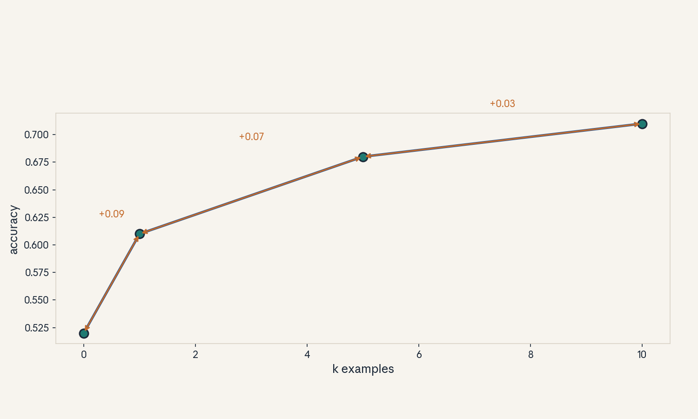
- Audit:
u06c02tof02. Before: k=0. After: k=10. One rule: examples condition, weights freeze.
C03: emergence caveats
Source, scope, objectives, dependencies
Calendar anchor: Week 4, Oct 18, “Emergent Abilities” with caveats. Scope: when a jump is real and when a metric creates it. Objective: show a threshold metric manufacturing a jump from a smooth curve. Depends on P07, P10.
Motivating question and tiny toy
Question: the benchmark jumps at scale. Did the model jump, or did the ruler jump? Toy: underlying skill s(N) = 0.05 * log10 N + 0.1. Metric M = 1 if s > 0.7 else 0. N = 1e8 .. 1e12.
Mental model
A step function on top of a ramp looks like a cliff. The skill climbs smoothly. The pass/fail line snaps from 0 to 1 the moment the ramp crosses the threshold. The jump is in the measurement, not the mind.
Objects, shapes, assumptions
- s(N): continuous underlying skill, smooth in log N.
- M(N) = 1[s(N) > t]: discontinuous reported metric.
- Assumption: the threshold t is fixed and the skill is monotone.
Derivation
s(N) is linear in log10 N. Solve s(N) = t for the crossing: log10 N = (t - 0.1) / 0.05 = 12. So N = 1e12. Below N, M = 0. At N*, M jumps to 1. The jump size (1.0) dwarfs the local slope of s (0.05 per decade). Any threshold metric on a smooth ramp shows this pattern.
Computed example
Toy: N = 1e9: s = 0.55, M = 0. N = 1e10: s = 0.60, M = 0. N = 1e11: s = 0.65, M = 0. N = 1e12: s = 0.70, M = 1. Four orders of magnitude of flat zero, then a jump. Report the continuous score too: 0.55, 0.60, 0.65, 0.70. Lab-06 asserts the crossing.
Implementation and checks
def s(n):
import math
return 0.05 * math.log10(n) + 0.1
def m(n, t=0.7):
return 1 if s(n) > t else 0
assert [m(10**e) for e in (9, 10, 11)] == [0, 0, 0]
assert m(10**12) == 1
assert abs(s(10**12) - s(10**9) - 0.15) < 1e-9
Check: the continuous gap across three decades is only 0.15 while the metric jumps 1.0. Lab-06 asserts both.
Complexity and costs
No compute cost. The cost is a wrong read: a team that believes the jump is real plans the wrong research.
Nearest alternative and selection boundary
Nearest alternative: report the continuous score alongside the threshold metric. Selection boundary: always prefer the continuous score for trend claims. Use the threshold only for ship gates.
Failure case and counterexample
Broken assumption: “the metric tracks the skill.” Counterexample: the toy: identical skill slope, metric flat then vertical. Real case pattern: exact match on a generative task jumps while token-level accuracy climbs smoothly.
Research reading and falsifiable extension
Reading: the Oct 18 emergent-abilities session. Falsifiable extension: take one “emergent” task, replace the 0/1 metric with the continuous score, replot vs scale. Hypothesis: the jump flattens into a ramp. Report both curves.
Exercises
- E11 (recall): define the threshold artifact.
- E12 (numerical): toy above. Find N* and the continuous gap from 1e9 to 1e12.
- E13 (failure diagnosis): a benchmark jumps 40 points at one scale. What do you check first?
- E14 (counterfactual): metric becomes the raw score. What happens to the jump?
- E15 (research): state the replot hypothesis.
Visual units
- Figure
u06_c03_threshold.png: smooth ramp with the threshold line, 0/1 steps below. Source: original toy. Shell 7 (break the metric assumption).
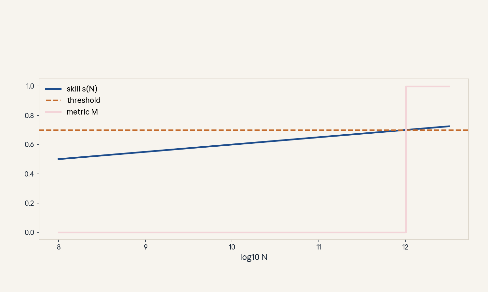
- Audit:
u06c03tof03. Before: smooth skill. After: snapped metric. One rule: thresholding.
C04: instruction following
Source, scope, objectives, dependencies
Calendar anchor: Week 4, Oct 18, “Instruction Following Models”. Scope: supervised fine-tuning on instruction-response pairs. Objective: compute the masked SFT loss on a toy pair. Depends on P11, P13, P14.
Motivating question and tiny toy
Question: the model knows language. How does it learn to follow orders? Toy: one pair. Instruction: 8 tokens. Response: 12 tokens. Loss counts only the response tokens.
Mental model
SFT is imitation with a mask. The instruction tokens are context, not targets. The model learns P(response token | instruction + response prefix). The mask is the whole trick: the model never learns to predict the instruction.
Objects, shapes, assumptions
- Pair (x, y): x instruction tokens, y response tokens.
- Loss = -mean over y tokens of log P(y_t | x, y_<t). X tokens carry zero loss weight.
- Assumption: the pairs demonstrate the desired behavior. The base model already knows the words.
Derivation
Cross-entropy over the response positions only. For the toy: 12 log-prob terms, mean. If the mean log-prob is -0.4 nats, loss = 0.4, perplexity on responses = e^0.4 = 1.49. The instruction’s 8 tokens contribute nothing. One gradient step moves weights toward the demonstrated responses only.
Computed example
Toy: response log-probs: [-0.2, -0.5, -0.3, -0.4, -0.6, -0.2, -0.3, -0.5, -0.4, -0.3, -0.2, -0.4]. Sum = -4.3. Mean = -0.358. Loss = 0.358. If the mask leaked and all 20 tokens counted with instruction log-probs averaging -1.5: total = -4.3 + 8*(-1.5) = -16.3, mean -0.815, loss 0.815: the number moves but teaches the wrong thing (the model starts predicting instructions). Lab-06 asserts the masked mean.
Implementation and checks
import math
lp = [-0.2, -0.5, -0.3, -0.4, -0.6, -0.2, -0.3,
-0.5, -0.4, -0.3, -0.2, -0.4]
loss = -sum(lp) / len(lp)
assert abs(loss - 0.3583) < 0.001
assert abs(math.exp(loss) - 1.4308) < 0.001
Check: loss equals the negative mean. Lab-06 asserts the mask changes the value.
Complexity and costs
SFT is cheap next to the pretrain run: thousands of pairs, not trillions of tokens. Cost is curation: each pair needs a good demonstration.
Nearest alternative and selection boundary
Nearest alternative: prompt the base model with instructions (no weight change). Selection boundary: SFT when the format must hold across many queries and prompts drift. Prompting when the task is rare.
Failure case and counterexample
Broken assumption: “the pairs cover the task.” Counterexample: SFT on short answers, then a long reasoning query: the model follows the format (short) and fails the task (needs long). The mask taught format, not reasoning.
Research reading and falsifiable extension
Reading: the Oct 18 instruction-following session. Falsifiable extension: SFT a toy model with the mask on vs off. Hypothesis: mask-off loss is lower on instructions but response quality is worse. Report both.
Exercises
- E16 (recall): write the masked SFT loss.
- E17 (numerical): toy log-probs above. Compute loss and response perplexity.
- E18 (failure diagnosis): the model echoes instructions instead of answering. What leaked?
- E19 (counterfactual): loss counts instruction tokens too. Who benefits, who loses?
- E20 (research): state the mask on/off hypothesis.
Visual units
- Figure
u06_c04_mask.png: token strip, 8 gray (masked) + 12 teal (loss). Source: original toy. Shell 3.
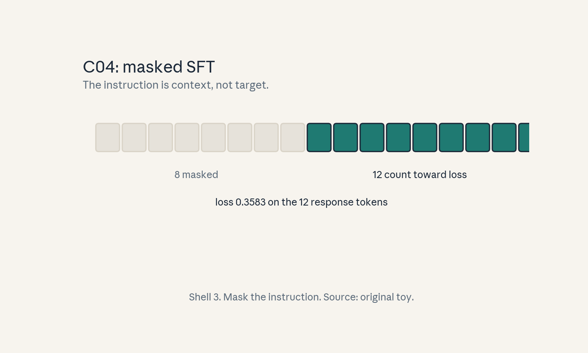
- Audit:
u06c04tof04. Before: raw pair. After: masked loss. One rule: mask the instruction.
C05: RLHF/RLAIF
Source, scope, objectives, dependencies
Calendar anchor: Week 4, Oct 18, “RLHF-RLAIF- Constitutional AI”. Scope: preference learning with a reward model and a KL guardrail. Objective: compute a Bradley-Terry preference probability and the KL penalty on a toy. Depends on P06, P10, P17.
Motivating question and tiny toy
Question: SFT imitates one answer. How does the model learn which of two answers humans prefer? Toy: response A reward 1.2, response B reward 0.8. KL of the policy from the SFT start: 2.5 nats. KL weight beta = 0.1.
Mental model
Two stages. First, a reward model learns from human (or AI) pairwise votes: which answer won. Second, the policy climbs the reward while a leash (KL to the SFT model) holds it back. The leash is the product: no leash, the policy games the reward.
Objects, shapes, assumptions
- r(x, y): scalar reward for prompt x, response y.
- Bradley-Terry: P(A beats B) = sigmoid(r_A - r_B).
- RL objective: E[r] - beta * KL(policy || SFT).
- Assumption: the reward model generalizes from the labeled pairs to new prompts.
Derivation
Sigmoid(0.4) = 1 / (1 + e^-0.4) = 0.5987: the reward model says A wins 60% of the time. KL penalty = 0.1 * 2.5 = 0.25 reward units. The policy trades reward for distance: move 1 nat away from SFT only if it buys more than 0.1 reward.
Computed example
Toy: r_A = 1.2, r_B = 0.8. P(A wins) = sigmoid(0.4) = 0.5987. Policy reward 1.0 with KL 2.5: objective = 1.0 - 0.25 = 0.75. Same reward with KL 0.5: objective = 0.95: the closer policy wins. Lab-06 asserts both numbers.
Implementation and checks
import math
def sigmoid(z):
return 1 / (1 + math.exp(-z))
p = sigmoid(1.2 - 0.8)
assert abs(p - 0.5987) < 0.001
obj = 1.0 - 0.1 * 2.5
assert abs(obj - 0.75) < 1e-9
Check: p in (0.5, 1) since r_A > r_B. Lab-06 asserts the KL tradeoff ordering.
Complexity and costs
Reward-model training is one more SFT-scale job. The RL phase (PPO or DPO-style) costs a multiple of SFT: rollouts, reward scoring, and updates. Human labels are the scarce cost in RLHF. AI labels replace them in RLAIF.
Nearest alternative and selection boundary
Nearest alternative: DPO, which skips the reward model and optimizes the preference directly. Selection boundary: explicit reward model when you need reward auditing and reuse. DPO when the preference data is fixed and you want fewer moving parts.
Failure case and counterexample
Broken assumption: “the reward model is the true objective.” Counterexample: reward hacking: the policy finds long, flattering answers that score high and help little. The KL leash slows this but does not remove it.
Research reading and falsifiable extension
Reading: the Oct 18 RLHF/RLAIF session. Falsifiable extension: fix beta, sweep rollout length, plot reward vs KL. Hypothesis: reward rises then plateaus while KL keeps growing (hacking onset). Report the knee.
Exercises
- E21 (recall): write the Bradley-Terry formula and the KL-regularized objective.
- E22 (numerical): r_A=1.2, r_B=0.8, KL=2.5, beta=0.1. Compute P(A wins) and the objective.
- E23 (failure diagnosis): reward climbs, human ratings fall. Name the failure.
- E24 (counterfactual): beta = 0. What breaks?
- E25 (research): state the hacking-onset hypothesis.
Visual units
- Figure
u06_c05_rlhf.png: reward vs KL curve with the knee marked. Source: original toy. Shell 6.
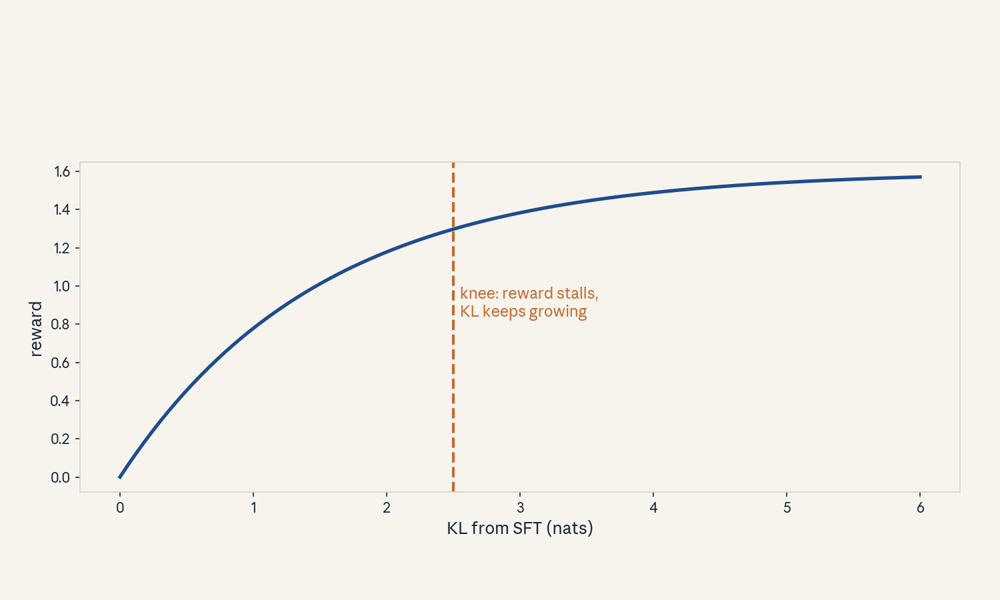
- Audit:
u06c05tof05. Before: SFT policy. After: reward-climbing policy. One rule: climb with a leash.
C06: constitutional feedback
Source, scope, objectives, dependencies
Calendar anchor: Week 4, Oct 18, “RLHF-RLAIF-Constitutional AI”. Scope: AI-generated critiques and revisions under a written constitution. Objective: compute a revised score from principle weights on a toy. Depends on C05, P17.
Motivating question and tiny toy
Question: human labels are slow. Can the model grade itself against written rules? Toy: constitution with two principles. Principle 1 (harmless) weight 0.6, principle 2 (helpful) weight 0.4. Response scores: harmless 0.9, helpful 0.5.
Mental model
The constitution is a rubric in prose. The model reads its own draft, critiques it per principle, rewrites it, and the preference pair (revised beats original) trains the reward model. Human input moves up one level: humans write the rules, the AI applies them.
Objects, shapes, assumptions
- Principles p_i with weights w_i summing to 1.
- Score(y) = sum_i w_i * s_i(y).
- Assumption: the AI judge applies the principles faithfully. The weights reflect real priorities.
Derivation
Score = 0.6 * 0.9 + 0.4 * 0.5 = 0.54 + 0.20 = 0.74. A revision that lifts helpfulness to 0.8 scores 0.6 * 0.9 + 0.4 * 0.8 = 0.86. The pair (0.86 > 0.74) becomes one RLAIF training example. The weights decide the tradeoff: raise w_helpful and revisions get longer.
Computed example
Toy above: original 0.74, revised 0.86, margin 0.12. If weights flip to (0.4, 0.6): original = 0.40.9 + 0.60.5 = 0.66, revised = 0.40.9 + 0.60.8 = 0.84, margin 0.18: the same revision looks better under helpful-heavy weights. Lab-06 asserts both margins.
Implementation and checks
def cscore(sub, w):
return sum(wi * si for wi, si in zip(w, sub))
orig = cscore([0.9, 0.5], [0.6, 0.4])
rev = cscore([0.9, 0.8], [0.6, 0.4])
assert abs(orig - 0.74) < 1e-9
assert abs(rev - orig - 0.12) < 1e-9
Check: weights sum to 1 and scores stay in [0, 1]. Lab-06 asserts the margin flip.
Complexity and costs
Critique-and-revise is inference cost: several model calls per training example. Cheaper than human labels at scale, but the judge’s biases become the policy’s biases.
Nearest alternative and selection boundary
Nearest alternative: human preference labels (RLHF). Selection boundary: constitutional AI when label volume is the bottleneck and the rules are writable. Human labels when the judgment needs taste the constitution cannot state.
Failure case and counterexample
Broken assumption: “the judge follows the constitution.” Counterexample: the judge rewards verbose, confident-sounding answers because its own training did. The constitution says nothing about verbosity, so the bias flows straight into the policy.
Research reading and falsifiable extension
Reading: the Oct 18 constitutional-AI session. Falsifiable extension: add a verbosity principle with weight sweeps, measure mean response length. Hypothesis: length falls monotonically with the principle weight. Report the curve.
Exercises
- E26 (recall): define the critique-revise loop.
- E27 (numerical): toy above. Compute both scores and the margin under each weight setting.
- E28 (failure diagnosis): revisions get longer but not better. Which weight moved, or what is missing?
- E29 (counterfactual): the judge ignores principle 2. What does the policy learn?
- E30 (research): state the verbosity-weight hypothesis.
Visual units
- Figure
u06_c06_constitution.png: two weighted bars, original vs revised. Source: original toy. Shell 3.
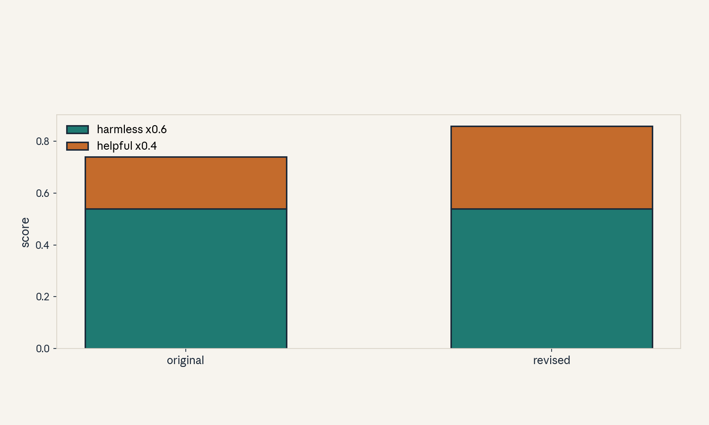
- Audit:
u06c06tof06. Before: draft. After: scored revision. One rule: weight the principles.
C07: PEFT/LoRA
Source, scope, objectives, dependencies
Calendar anchor: Week 4, Oct 18 and Oct 21, “Parameter Efficient Finetuning”. Scope: low-rank adapters. Objective: compute the LoRA parameter count and merge it back. Depends on P04, P11.
Motivating question and tiny toy
Question: fine-tuning copies the whole model per task. Can a small patch do the job? Toy: weight W0 shape (4, 4). LoRA rank r = 2: B (4, 2), A (2, 4). W = W0 + B A.
Mental model
Freeze the giant, train a thin detour. B A is a rank-r update: information flows through a narrow hallway. At inference, fold the hallway into the wall: W = W0 + B A, zero extra cost.
Objects, shapes, assumptions
- W0: (d, k) frozen. B: (d, r), A: (r, k) trained.
- Trainable params: r * (d + k) vs full d * k.
- Scale: often alpha / r multiplies B A.
- Assumption: the task update lives near a low-rank subspace.
Derivation
Toy: d = k = 4, r = 2. LoRA params = 2 * (4 + 4) = 16 vs full 16: the toy shows the algebra, not the saving. Real toy: d = k = 4096, r = 16: LoRA = 16 * 8192 = 131,072. Full = 16,777,216. Ratio = 128. Merge: W = W0 + (alpha / r) B A, a single matmul at load time, then the forward pass is unchanged.
Computed example
Toy matrices: W0 = I_4. B = [[1, 0], [0, 1], [1, 1], [0, 0]]. A = [[1, 0, 0, 1], [0, 1, 1, 0]]. B A = [[1, 0, 0, 1], [0, 1, 1, 0], [1, 1, 1, 1], [0, 0, 0, 0]]. W = W0 + B A = [[2, 0, 0, 1], [0, 2, 1, 0], [1, 1, 2, 1], [0, 0, 0, 1]]. Rank of the update: 2. Lab-06 asserts the merge equals the two-path forward pass.
Implementation and checks
import numpy as np
rng = np.random.default_rng(7)
d, k, r = 64, 64, 4
W0 = rng.standard_normal((d, k))
B = rng.standard_normal((d, r)) * 0.01
A = rng.standard_normal((r, k)) * 0.01
W = W0 + B @ A
x = rng.standard_normal(k)
two_path = W0 @ x + B @ (A @ x)
assert np.allclose(W @ x, two_path)
assert B.size + A.size == r * (d + k)
Check: merged and two-path forward passes agree to 1e-12. Lab-06 asserts this identity.
Complexity and costs
Training moves r(d + k) params per layer instead of dk. Optimizer state shrinks by the same ratio. Inference cost after merge: zero delta.
Nearest alternative and selection boundary
Nearest alternative: full fine-tuning. Selection boundary: LoRA when tasks are many and GPU memory is tight. Full fine-tuning when the task needs a large move off the pretrained manifold.
Failure case and counterexample
Broken assumption: “rank r suffices.” Counterexample: a task that rewrites core knowledge (new language script): rank 8 cannot carry the change, loss stalls while full fine-tuning moves.
Research reading and falsifiable extension
Reading: the Oct 18 / Oct 21 PEFT sessions. Falsifiable extension: sweep r in {1, 2, 4, 8, 16} on a fixed task, plot task score. Hypothesis: the curve saturates and r = 4 reaches 95% of r = 16. Report the curve.
Exercises
- E31 (recall): write the LoRA update and the param count.
- E32 (numerical): d=k=4096, r=16. Compute LoRA params, full params, and the ratio.
- E33 (failure diagnosis): loss stalls at rank 8 but full fine-tuning works. Name the cause.
- E34 (counterfactual): the update is full rank. What does LoRA with r < d lose?
- E35 (research): state the rank-sweep hypothesis.
Visual units
- Figure
u06_c07_lora.png: W0 block plus thin B A hallway, merged W. Source: original toy. Shell 4.
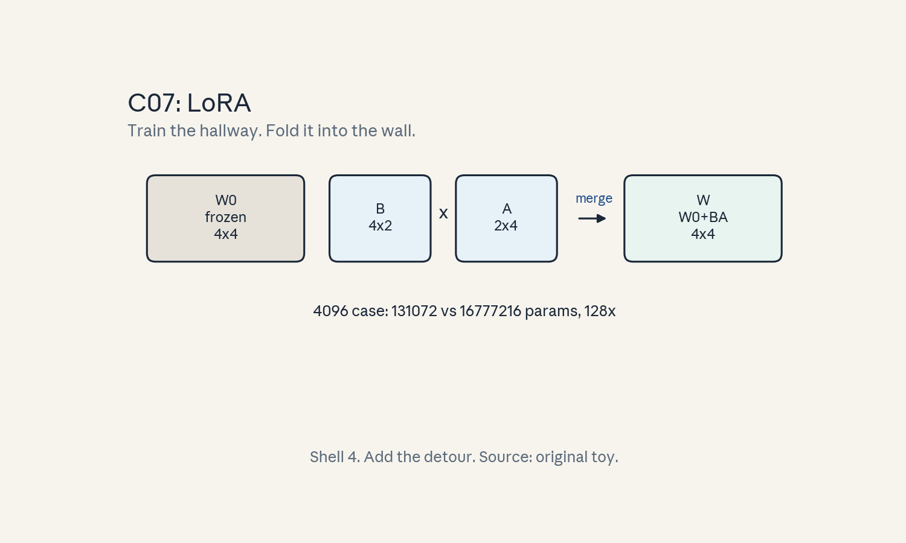
- Audit:
u06c07tof07. Before: frozen W0. After: W0 + BA. One rule: add the low-rank detour.
C08: data loading
Source, scope, objectives, dependencies
Calendar anchor: Week 5, Oct 25, “Data in AI Pipelines”. Scope: the loader as a pipeline stage. Objective: find the bottleneck stage in a toy pipeline. Depends on P15.
Motivating question and tiny toy
Question: the GPUs idle while the loader catches up. Where is the stall? Toy: per step, compute needs 2.0 s, data fetch needs 0.5 s, batch assembly needs 0.3 s. Then a slow disk moves fetch to 2.5 s.
Mental model
Training is an assembly line: fetch, decode, batch, compute. The line runs at the speed of its slowest station. Prefetching overlaps fetch with compute, but overlap only hides the stall up to the compute time.
Objects, shapes, assumptions
- t_compute, t_fetch, t_assemble per step.
- With prefetch: step time = max(t_compute, t_fetch + t_assemble) when fully overlapped.
- Assumption: prefetch depth covers the fetch latency. Workers scale fetch.
Derivation
Fast disk: max(2.0, 0.8) = 2.0 s: compute-bound, the loader is invisible. Slow disk: max(2.0, 2.8) = 2.8 s: data-bound, GPUs idle 0.8 s per step (29% idle). Fix options: more workers (fetch parallelism), faster storage, or larger batches (raises compute per fetch).
Computed example
Toy above. Utilization = t_compute / step time. Fast: 2.0/2.0 = 100%. Slow: 2.0/2.8 = 71%. Double the workers halves fetch to 1.25 s: max(2.0, 1.55) = 2.0: back to 100%. Lab-06 asserts the max formula on both regimes.
Implementation and checks
def step_time(tc, tf, ta):
return max(tc, tf + ta)
assert step_time(2.0, 0.5, 0.3) == 2.0
assert abs(step_time(2.0, 2.5, 0.3) - 2.8) < 1e-9
assert abs(step_time(2.0, 1.25, 0.3) - 2.0) < 1e-9
Check: the max picks the bottleneck. Lab-06 asserts all three regimes.
Complexity and costs
Loader tuning costs staff hours, not FLOPs. The cost of a slow loader is GPU-hours burned at partial utilization.
Nearest alternative and selection boundary
Nearest alternative: in-memory dataset (no fetch stage). Selection boundary: in-memory when the dataset fits RAM. Streaming loader when it does not.
Failure case and counterexample
Broken assumption: “more workers always help.” Counterexample: 32 workers on a disk with 4-way concurrency: fetch time stops falling and jitter rises. The metadata server becomes the new bottleneck.
Research reading and falsifiable extension
Reading: the Oct 25 data-pipelines session. Falsifiable extension: sweep worker count, measure step time. Hypothesis: step time falls then plateaus. The plateau names the true bottleneck. Report the sweep.
Exercises
- E36 (recall): write the overlapped step-time formula.
- E37 (numerical): toy above. Compute step time and utilization in all three cases.
- E38 (failure diagnosis): 32 workers, no speedup. Name the likely bottleneck.
- E39 (counterfactual): prefetch depth = 0. What is the step time?
- E40 (research): state the worker-sweep hypothesis.
Visual units
- Figure
u06_c08_pipeline.png: three stations, the slow one highlighted, overlap arrows. Source: original toy. Shell 3.
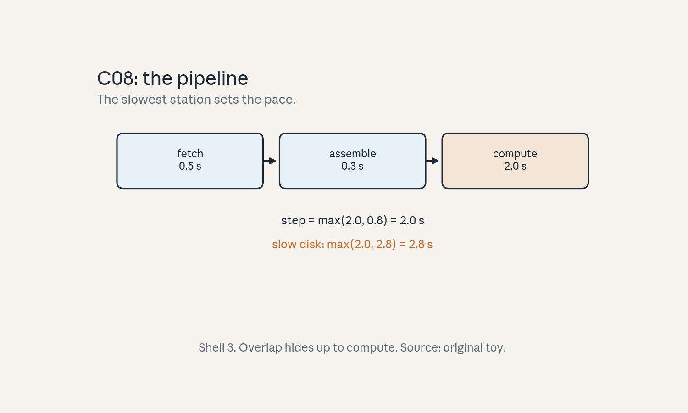
- Audit:
u06c08tof08. Before: serial line. After: overlapped line. One rule: the slowest station sets the pace.
C09: preprocessing
Source, scope, objectives, dependencies
Calendar anchor: Week 5, Oct 25, “Data in AI Pipelines”. Scope: cleaning and filtering before training. Objective: compute the token yield of a toy pipeline. Depends on P10, P13.
Motivating question and tiny toy
Question: raw web text is dirty. What fraction survives cleaning? Toy: 1000 documents. Dedup removes 15%. Quality filter removes 20% of the rest. Each document averages 500 tokens.
Mental model
Preprocessing is a funnel. Each stage keeps a fraction: dedup keeps the unique, the filter keeps the good. Token yield is the product of the keep rates. The funnel runs once. Training reads the output forever.
Objects, shapes, assumptions
- Keep rates q1, q2, … Per stage.
- Yield = product of q_i. Tokens out = tokens in
- yield.
- Assumption: stages are independent enough that the product approximates the true yield.
Derivation
1000 docs * 500 tokens = 500,000 tokens in. After dedup: 850 docs. After filter: 680 docs. Tokens out = 340,000. Yield = 0.85 * 0.80 = 0.68. The funnel cost is one pass over the raw data. The payoff is every training step reading cleaner tokens.
Computed example
Toy above: yield 0.68, 340k tokens from 500k. Filter too strict (q2 = 0.5): yield 0.425, 212,500 tokens: cleaner but smaller. The tradeoff is quality per token vs tokens per dollar. Lab-06 asserts the product.
Implementation and checks
def funnel(docs, tok_per_doc, keeps):
y = 1.0
for q in keeps:
y *= q
return docs * tok_per_doc * y, y
toks, y = funnel(1000, 500, [0.85, 0.80])
assert toks == 340000 and abs(y - 0.68) < 1e-9
Check: yield is the product, tokens out is yield times tokens in. Lab-06 asserts the strict-filter variant.
Complexity and costs
One linear pass over raw data, embarrassingly parallel. Dedup needs a hash table of the corpus (MinHash or exact). The filter needs a classifier pass.
Nearest alternative and selection boundary
Nearest alternative: train on raw data and let scale sort it out. Selection boundary: filter when junk is a large share and compute is dear. skip when data is already clean (curated mixes).
Failure case and counterexample
Broken assumption: “the filter keeps the good.” Counterexample: an aggressive English-quality filter drops code and math (odd punctuation): the model loses exactly the skills the filter could not score.
Research reading and falsifiable extension
Reading: the Oct 25 data-pipelines session. Falsifiable extension: train two toy models, one on filtered and one on raw data, fixed token budget. Hypothesis: filtered wins per token but the gap shrinks with more tokens. Report both.
Exercises
- E41 (recall): write the yield formula.
- E42 (numerical): toy above. Compute yield and tokens out. Then with q2 = 0.5.
- E43 (failure diagnosis): math scores drop after filtering. What did the filter do?
- E44 (counterfactual): dedup runs after the filter. What changes?
- E45 (research): state the filtered-vs-raw hypothesis.
Visual units
- Figure
u06_c09_funnel.png: funnel with two keep rates and the token counts. Source: original toy. Shell 2.
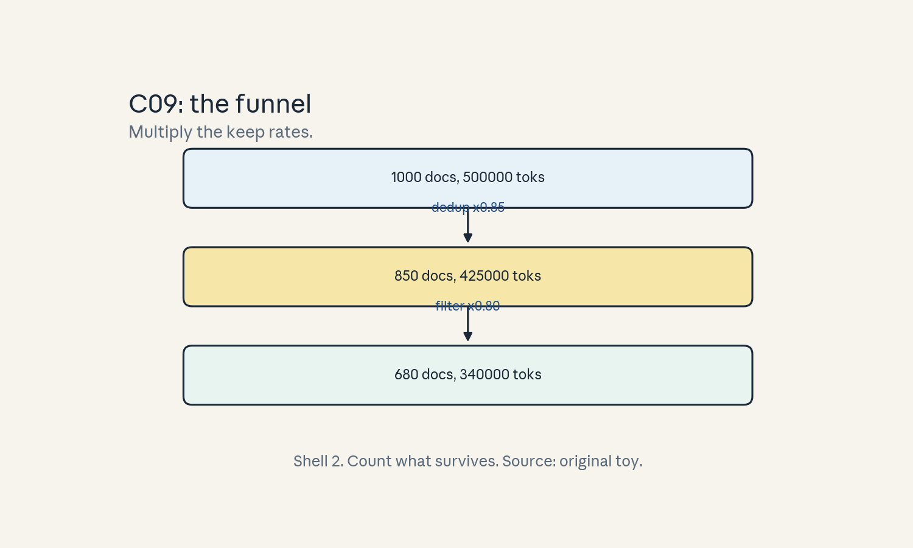
- Audit:
u06c09tof09. Before: raw docs. After: kept tokens. One rule: multiply the keep rates.
C10: shuffling/packing
Source, scope, objectives, dependencies
Calendar anchor: Week 5, Oct 25, “Data in AI Pipelines”. Scope: batch construction. Objective: compute the padding saved by packing on a toy. Depends on P10, P13.
Motivating question and tiny toy
Question: sequences have different lengths. How do you fill a batch without drowning in pad tokens? Toy: 6 sequences, lengths [800, 600, 400, 300, 200, 100]. Bin capacity 1024.
Mental model
Naive batching pads every sequence to the longest: the batch is a rectangle of pad tokens with text at the top. Packing concatenates short sequences into full bins: the batch is dense text with a document mask so attention does not leak across documents.
Objects, shapes, assumptions
- Lengths l_i, bin capacity C, attention mask per document inside a bin.
- Naive tokens = max(l) * count. Packed tokens = bins * C. Efficiency = real tokens / total.
- Assumption: the mask blocks cross-document attention (else packing corrupts training).
Derivation
Real tokens = 2400. Naive: max 800 * 6 = 4800 tokens, efficiency 50%. Greedy pack: [800+200], [600+400], [300+100] = 3 bins of 1000 <= 1024. Packed: 3 * 1024 = 3072 tokens, efficiency 2400/3072 = 78%. Pad tokens fall from 2400 to 672. Shuffling: reshuffle the sequence order each epoch so bins mix. Without it the same documents co-occur every epoch.
Computed example
Toy above: naive efficiency 50%, packed 78%, pad tokens 2400 -> 672 (3.6x fewer). Bin count 3 vs 6 naive rows. Lab-06 asserts the greedy pack and the efficiencies.
Implementation and checks
def greedy_pack(lengths, cap):
bins = []
for l in sorted(lengths, reverse=True):
for b in bins:
if sum(b) + l <= cap:
b.append(l)
break
else:
bins.append([l])
return bins
bins = greedy_pack([800, 600, 400, 300, 200, 100],
1024)
assert len(bins) == 3
assert sum(sum(b) for b in bins) == 2400
Check: every length lands in exactly one bin and no bin overflows. Lab-06 asserts the 78% efficiency.
Complexity and costs
Packing is a bin-packing heuristic, O(n log n), run once per epoch. The saving is every step: fewer pad tokens per batch.
Nearest alternative and selection boundary
Nearest alternative: sort by length and pad within buckets. Selection boundary: packing when length variance is high. Bucketing when lengths cluster.
Failure case and counterexample
Broken assumption: “the mask is correct.” Counterexample: mask bug lets the last token of document 1 attend to document 2’s start: the model learns cross-document bigrams and eval perplexity looks fine while document coherence breaks.
Research reading and falsifiable extension
Reading: the Oct 25 data-pipelines session. Falsifiable extension: train with packing vs naive padding, fixed step budget. Hypothesis: packing reaches the same loss in fewer steps because each step carries more real tokens. Report both curves.
Exercises
- E46 (recall): define packing and the document mask.
- E47 (numerical): toy above. Compute naive and packed efficiency and pad-token counts.
- E48 (failure diagnosis): eval looks fine but long documents ramble. What broke?
- E49 (counterfactual): no shuffling between epochs. What bias appears?
- E50 (research): state the packing-vs-padding hypothesis.
Visual units
- Figure
u06_c10_packing.png: naive padded rectangle vs three packed bins. Source: original toy. Shell 8 (compare two layouts).
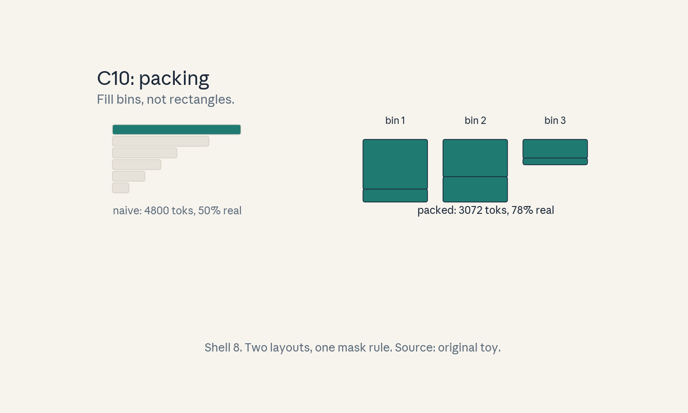
- Audit:
u06c10tof10. Before: padded batch. After: packed bins. One rule: fill bins, mask documents.
C11: throughput
Source, scope, objectives, dependencies
Calendar anchor: Week 5, Oct 25, “Data in AI Pipelines” and the Oct 23 Dettmers guest talk. Scope: tokens per second as the pipeline metric. Objective: compute throughput from batch, length, and step time. Depends on P15, C08.
Motivating question and tiny toy
Question: the cluster burns dollars per hour. How many tokens does each dollar buy? Toy: batch 32, sequence 512, step time 2.0 s.
Mental model
Throughput is the speedometer: tokens per second = batch * length / step time. Everything else (loader, packing, precision) shows up in the speedometer. Dollars per token = dollars per second / tokens per second.
Objects, shapes, assumptions
- Throughput R = B * T / t_step (tokens/s).
- Assumption: steady state. Step time already includes the loader (C08).
Derivation
R = 32 * 512 / 2.0 = 8192 tokens/s. At a toy cluster price of $24/hour ($0.00667/s), cost per million tokens = 1e6 / 8192 * 0.00667 = $0.81. Halve the step time and the cost halves. The price is a labeled toy, not a quote.
Computed example
Toy above: 8192 tok/s, $0.81 per million tokens at the toy price. Packing (C10) lifts real tokens per step 1.56x (78%/50%): same step time, 12,779 real tok/s, $0.52 per million. Lab-06 asserts both.
Implementation and checks
def throughput(B, T, t):
return B * T / t
def cost_per_mtok(R, dollars_per_s):
return 1e6 / R * dollars_per_s
R = throughput(32, 512, 2.0)
assert R == 8192
assert abs(cost_per_mtok(R, 24/3600) - 0.81) < 0.02
Check: units work out to tokens/s and dollars. Lab-06 asserts the packing lift.
Complexity and costs
The metric is free to compute. The cost it measures is the whole training bill.
Nearest alternative and selection boundary
Nearest alternative: time-to-accuracy (tokens to a target loss). Selection boundary: throughput for system tuning. Time-to-accuracy for recipe choices.
Failure case and counterexample
Broken assumption: “all tokens are equal.” Counterexample: packing lifts token throughput 1.56x but pad tokens taught nothing: time-to-loss improves only on real tokens.
Research reading and falsifiable extension
Reading: the Oct 23 Dettmers talk. Falsifiable extension: measure R before and after a loader fix. Hypothesis: R rises by the predicted factor from the step-time model. Report both.
Exercises
- E51 (recall): write the throughput formula.
- E52 (numerical): toy above. Compute R and cost per million tokens. Then with the packing lift.
- E53 (failure diagnosis): R rises but loss stalls. What is wrong with the metric?
- E54 (counterfactual): step time doubles. What happens to cost per token?
- E55 (research): state the loader-fix hypothesis.
Visual units
- Figure
u06_c11_speedo.png: speedometer bar, 8192 vs 12779 tok/s. Source: original toy. Shell 5.
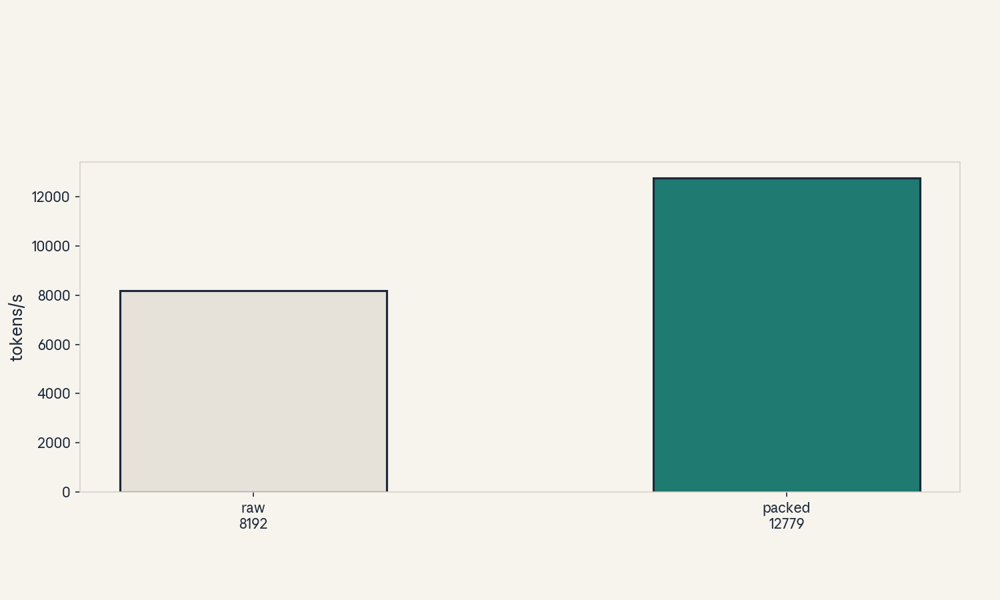
- Audit:
u06c11tof11. Before: step time. After: tokens per second. One rule: divide tokens by time.
C12: reproducibility
Source, scope, objectives, dependencies
Calendar anchor: Week 5, Oct 25, “Data in AI Pipelines”. Scope: seeds, determinism, and honest variance. Objective: compute mean and spread over a toy seed sweep. Depends on P07, P10.
Motivating question and tiny toy
Question: the loss is 2.31. Is that the recipe or the seed? Toy: 5 runs, same recipe, seeds 0-4. Losses: [2.31, 2.29, 2.33, 2.30, 2.32].
Mental model
One run is an anecdote. A seed sweep is evidence. Fix the code and data order per seed, vary only the seed, and report mean plus spread. A recipe beats another only if the gap clears the spread.
Objects, shapes, assumptions
- Losses l_1 .. L_n over n seeds.
- Mean m, sample std s. Gap g between recipes.
- Assumption: seeds are independent draws. The pipeline is deterministic given a seed.
Derivation
Mean = 11.55 / 5 = 2.31. Deviations: [0, -0.02, 0.02, -0.01, 0.01]. Sum of squares = 0.001. Sample variance = 0.001 / 4 = 0.00025. Std = 0.0158. A rival recipe at 2.29 sits inside one std of 2.31: no evidence of a win. At 2.27 (gap 0.04, 2.5 std): evidence.
Computed example
Toy above: mean 2.31, std 0.0158. Recipe B mean 2.295 over 5 seeds: gap 0.015 < 1 std: call it a tie and keep the simpler recipe. Lab-06 asserts the mean and std.
Implementation and checks
import statistics
ls = [2.31, 2.29, 2.33, 2.30, 2.32]
m = statistics.mean(ls)
s = statistics.stdev(ls)
assert abs(m - 2.31) < 1e-9
assert abs(s - 0.0158) < 0.001
Check: stdev uses n-1. Lab-06 asserts the tie call.
Complexity and costs
Seed sweeps multiply the compute bill by n. The alternative (one run, loud claim) is cheaper and wrong.
Nearest alternative and selection boundary
Nearest alternative: one seed plus a confidence interval from training dynamics. Selection boundary: sweeps for recipe decisions. Single seeds only for smoke tests.
Failure case and counterexample
Broken assumption: “the seed is the only nondeterminism.” Counterexample: nondeterministic GPU kernels (atomic adds) make the same seed give different losses across runs: the spread measures kernel noise, not the recipe.
Research reading and falsifiable extension
Reading: the Oct 25 data-pipelines session. Falsifiable extension: run the same seed twice on different GPU types. Hypothesis: losses match to 1e-4 if kernels are deterministic, else they drift. Report both.
Exercises
- E56 (recall): define the seed-sweep protocol.
- E57 (numerical): toy losses. Compute mean, std, and the tie call vs recipe B at 2.295.
- E58 (failure diagnosis): same seed, different loss on rerun. Name two causes.
- E59 (counterfactual): n = 1. What can you claim?
- E60 (research): state the cross-GPU determinism hypothesis.
Visual units
- Figure
u06_c12_seeds.png: five dots with mean and one-std band, rival recipe inside the band. Source: original toy. Shell 5.
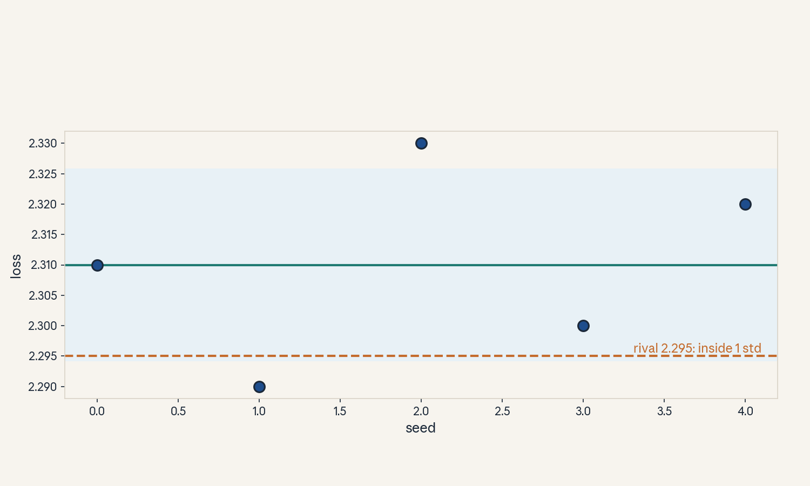
- Audit:
u06c12tof12. Before: one number. After: mean plus spread. One rule: sweep the seed.
U06 chapter plate
Figure u06_chapter.png: the adaptation ladder:
pretrain -> SFT (masked) -> preference (RLHF/RLAIF)
-> LoRA patch, with the data pipeline feeding
every stage. Source: original.
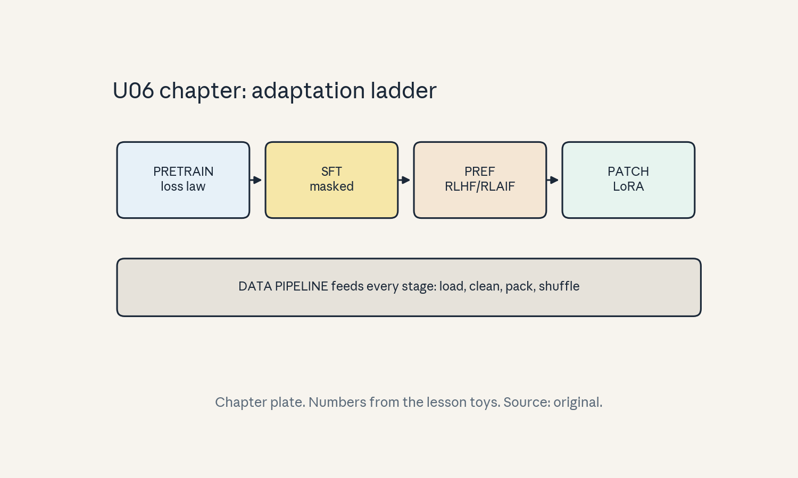
Unit-scope replication proposal (PROPOSED, not executed)
Course-level capstones live in capstones/. This
unit proposes: replicate the scaling-law fit on
three toy model scales, then test whether a
threshold metric manufactures an emergence jump on
a synthetic task. See lab-06.